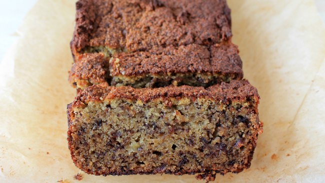

Healthy Banana Bread

Description
This recipe is a healthy alternative to regular banana bread. It uses maple syrup as a sweetener and coconut flour over bleached flour.
The coconut flour does not absorb as much moisture, so I recommend letting the bread cool in the fridge before cutting. Feel free to substitute
the nut butter for half of a banana if you prefer your bread to taste less nutty.
Ingredients
- 3 ripe bananas
- 1/2 cup nut butter
- 3 eggs
- 1 tablespoon maple syrup
- 1 teaspoon vanilla extract
- 1 tablespoon melted coconut oil
- 1/2 cup coconut flour
- 1/2 teaspoon cinammon
- 1/2 teaspoon baking powder
- 1/2 cup chocolate chips
Steps
- Mash bananas and combine with rest of wet ingredients
- Mix in dry ingredients and chocolate chips
- Pour into parchment-lined 9x5 pan
- Bake at 350 degrees F for 45 minutes